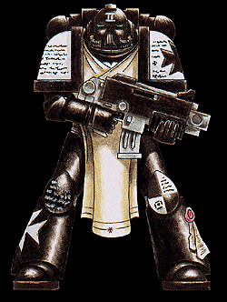

Imperial Forces |
Force Disposition Introduction |
Ork Forces |
|
Black Templars Fall of a Champion  The Black Templars exemplary record during their engagement of the Ork fleet around Armageddon was shattered when they returned to the space hulk Malevolent Dread. The hulk had already sustained major damage through previous Templar actions through the use of boarding parties and bombardment from the battle barge Light of Purity and High Marshal Helbrecht himself led the attack to destroy the huge vessel once and for all. Huge craters dominated the surface of the Malevolent Dread where the Templars' bombardment cannon and heavy thermic charges had ravaged the hulk, with the effect that few of the vessel's many weapons batteries were functional. Drawing alongside the hulk, the Light of Purity unleashed an entire Crusade of the Templars upon the Orks within. Terminator squads were teleported directly within the hull of the Malevolent Dread to form a perimeter as large numbers of Marines crossed the void from the battle barge on board Thunderhawks and boarding torpedoes. Their mission was two-fold; first to wipe out as much of the Ork infestation deemed possible within the course of the mission, but also to lay the final set of thermics that would tear the hulk in two within a gigantic combined explosion. Already weakened by the Templar's previous attacks, the Techmarines of the Chapter had predicted the possibility of breaking the hulk apart by the placement of charges in structurally damaged areas. |
| ||||||||||||||||||||||||||||||||||||||||||||||||||||||||
|
This was a huge undertaking, for the Malevolent Dread was many times the size of even the Marines' own battle barge and, to the knowledge of all who boarded the hulk, such a mission had never before been attempted. High Marshal Helbrecht led his Crusade, teleporting on board with his Terminators to begin the first phase of the mission. The Orkish response to the boarders was immediate and the Terminators soon Fall of a Championfound themselves embroiled in heavy combat. Already the Templars' losses began to mount. Helbrecht, unwilling to risk aborting the mission at this early stage, took direct command of several Terminator squads, leading them forward to blunt several determined Ork assaults. Casualties were high, but Helbrecht fought hard to create enough room near the surface of the hulk to allow the rest of his Crusade to deploy. As Thunderhawks began to dock and boarding torpedoes pierced the skin of the Malevolent Desire, fighting was still intense all around the weak perimeter the Terminators had managed to create and Helbrecht bled from several wounds. The Terminators continued to hold back Ork attacks, having established crippling fire lanes along the hulk's twisting corridors, as Helbrecht organised his Crusade for the next phase of the mission. Squads were delegated to penetrate further into the hulk with the intention of engaging the main portion of the Ork forces, whilst others were charged with laying the thermics that would lead to the Malevolent Dread's final demise. Helbrecht drew his own command squads to him to lay the most vital charges, those were to start the chain reaction of destruction that would begin the process of tearing the hulk in two from its very centre. He was joined by one other, Initiate Vosper, a Marine who had proved himself in combat countless times and who had earnt the title Emperor's Champion. Saluting Helbrecht with the Crusade's Black Sword, Vosper led the Marines to their target. The Terminators of the Chapter had managed to hold the Ork hordes away from the rest of the Crusade and now they formed the spear point of the advance. The entire Crusade marched to battle within the dark labyrinthine tunnels that twisted throughout the hulk. Once they left their comparatively safe fire lanes, casualties began to mount once more, but with the whole Crusade supporting them from behind, the Terminators managed to push through the positions the Orks had established to counter the boarding attempt. As the Black Templars moved further into the hulk, squads began to spread out to fulfil their individual objectives and, in doing so, made themselves more vulnerable to sudden Ork assaults. Helbrecht and Emperor's Champion Vosper cleaved through each Ork attack they faced. At the behest of their cruel leaders, Orks began to throw themselves at the Templars, the sheer weight of their numbers adding much to their confidence. The Marines were soon to arrive at a huge metal walled cavern, formed from the gap left by two ill-fitting and ancient ships that made this part of the hulk. As the Templar squads spread out across the ruined space, the Orks launched their heaviest attack yet. Nearly a thousand Orks charged madly at the thin Marine line, into the waiting bolter fire of the Templars. The leading Orks fell immediately under the heavy fire, those behind leaping over the bodies of the dead, eager to engage the Marines. A resounding crack echoed around the huge cavern as the Orks smashed into the Marines, the sound of disciplined bolter fire soon giving way to the dreadful cries and shouts of mortal combat. Once engaged in this assault, the Marines lost their advantage but, standing firm under the weight of the aliens, the Templar line held. Helbrecht and Vosper led the counter attack side by side, their skill in arms unmatched by the Orks that pressed upon them all around. Slowly, the balance of the battle shifted, with Marines reforming behind the two heroes' righteous fury as a mountain of slain Orks began to pile at their feet. Sighting a huge Ork smiting brother Templars in the midst of the fighting, Vosper, the Emperor's Champion, called the alien to account and, placing himself in harm's way, challenged the Ork to single combat. Highly disciplined, the Black Templars did not let up in their own battles, but each whispered a prayer of courage to their Champion, he who was the best of them all, the very embodiment of their Chapter. The Ork was a powerful brute and a cunning warrior, who met each blow of the Black Sword with its own crude weapon. The Orks close to the warrior began their own chant of support to rival that of the Templars, as it traded blows and ripostes with the Emperor's Champion. Neither landed a blow upon the other but gradually the Templar began to force the alien back with long, powerful strokes of his mighty weapon. And then the impossible happened. Reeling from a strong overhead swing of the Black Sword, the Ork became enraged and, recovering with inhuman speed, set about the Emperor's Champion with a series of frenzied attacks. The Black Sword leapt to counter every blow until the Ork charged, barrelling into Vosper and knocking him off balance as its crude weapon descended, cleaving the Emperor's Champion's skull in two. A low moan passed through the Black Templars' ranks as the body of their Champion crashed to the ground, quickly followed by a deafening roar of victory from the Orks. The Templar line faltered as the Orks pushed their advantage and High Marshal Helbrecht strode ahead, desperate to regain the momentum his stunned Marines had lost. As one, the Orks leapt to attack, renewing their assault with redoubled fury. Helbrecht fought back, but was soon borne to the ground by a dozen Orks that had surrounded him. He was pulled clear by his personal command squad with an Ork axe buried deep into his chest armour. All around, Marines were being driven back by Ork mobs until it became clear that they had to retreat. Many more Marines were mercilessly cut down by pursuing Orks as they withdrew from the hulk to their waiting transports. The teleporter chambers of the Light of Purity were soon overloaded with the strain of bringing so many Marines back to safety, but a great number of squads found themselves cut off from escape as the Orks poured through the Templars' positions. With no effective perimeter and the presence of intense enemy activity, the Chapter could do nothing for these Marines determined to sell their lives at a high price. When the battle barge Light of Purity pulled away from the hulk, nearly half of Helbrecht's Crusade had been wiped out during the failed mission. The Apothecaries of the Chapter subsequently declared the High Marshal's injuries as critical, but not life threatening, his enhanced Marine body the only thing that stood between himself and the Emperor's ultimate Peace. | |||||||||||||||||||||||||||||||||||||||||||||||||||||||||